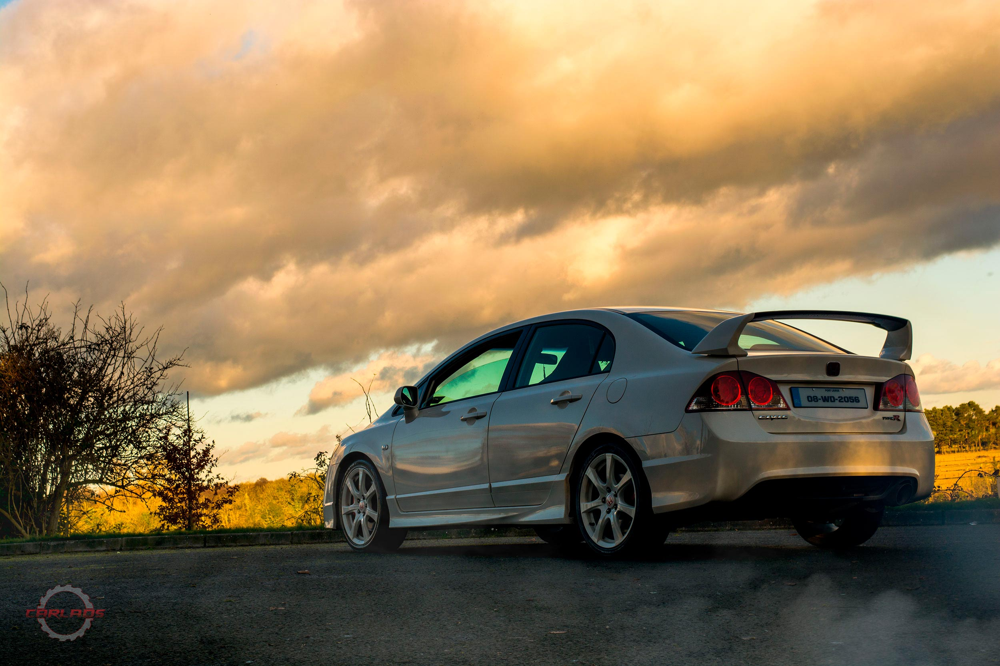
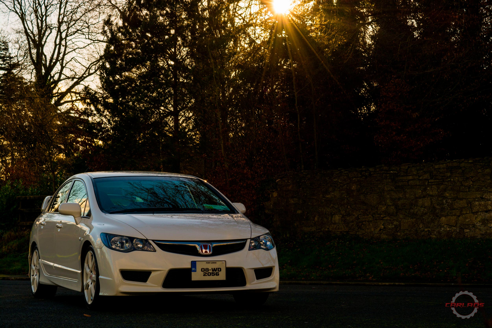
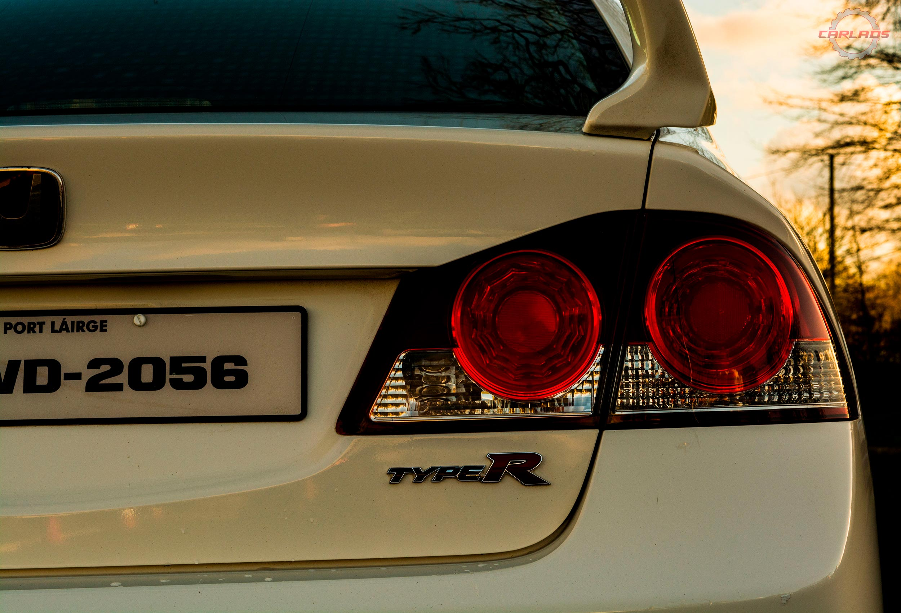
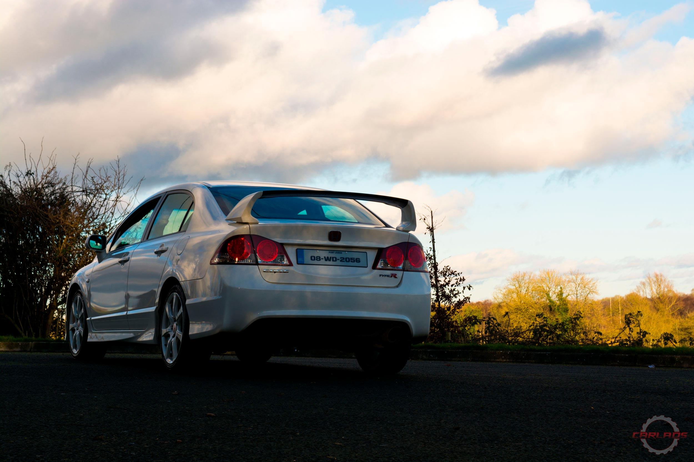

Honda Civic Type-R
The FD2 Civic went on sale in 2007.For the first time, the JDM Civic Type R was sold as a four-door sports sedan rather than a three-door hot hatch. Honda claims the chassis is 50% more rigid than the previous Japan-only DC5 Integra Type R, and the new model features an independent rear suspension rather than the torsion beam configuration used on the latest European Civic Type-R.[3] To save weight, aluminium is used extensively and bonded with adhesive instead of welded. Though the chassis is larger and more rigid than JDM Integra Type R, it is only 1.8 kg (4 lb) heavier.
Liam's Civic was imported from Japan as a brand new car, in 2008. Someone once said about Type Rs that you can have one in any colour you want, as long as it's Championship White, just like his 225hp Civic on steroids. Even though it is kept as a complete standard car, it always received lots of attention in keeping it in great shape.
"This is my first VTEC, I have owned a lot of turbocharged cars before but this car is just something different. Bringing it on the first drive was an unforgettable moment, opening up the VTEC and hearing it roar was beautiful. I remember brining my farther for a drive. The car is quite low so getting down into the car was a struggle for him. The stiff sport suspension didn't help. When we hit VTEC I could see him grabbing onto the handle and he said " Jesus if it had wings it would take off". The throttle response is second to none for a completely standard front wheel drive."